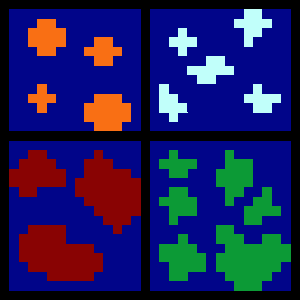
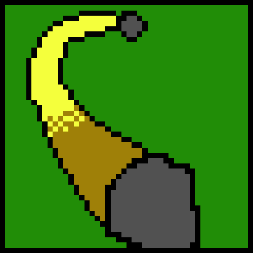

There are many different galaxies including the Autumn Galaxy, Winter Galaxy, Heat Galaxy, and the Mutant Spring Galaxy. Each galaxy is unique. They all are based on the seasons of the year. Each planet holds a unique setting with tons of secrets for you to find and explore to find the portals to help you find your way back to the Cavepeople Galaxy.

The Autumn Galaxy is where you start in your adventure. You will have to face daring enemies like the pumpkin walkers.(More about them on the univereses' creatures). The Autumn Galaxy is where there is many different and unique planets where each of them have 1 color of fall where the enemies are different based on the planets color. So be prepared to face many different enemies on many different colored planets. Get ready for the first boss of this adventure in a fall themed battle.
This cold galaxy has colder planets, with the coldest enemies(temperature wise and heart wise) in the univereses. These planets are so cold barely any life can survive, and the life that can survive are so cold they're evil. You would have to survive the frozen peaks of the mountains, while exploring ice caves, and dodging the evilest enemies. So you better pack a fur coat and hat so your ready to deafeat this galaxy and go to the next one. Get ready for this ice cold boss in a frozen battle.
This galaxy is practically the exact oppitsite of the Winter Galaxy. The enemies are burning hot and the terrain is more flat with a lot of lava pools but you won't get die in, but you could get stuck in them and have to find a way out while in it. This galaxy is so hot because it has 3 suns and it's as close to all three of them as Mercury. So pack some 3 sun sunscreen, a towel, and a ton of ice. We'll get all heated up with galaxy so get ready to beat up some heated enemies. Get ready for the boss it a heated battle.
This galaxy puts a whole new definition for mutant. For their are so many lush jungle filled with mutant plants causing a dangerous environment full of plants ready to eat you. Get ready for this crazy ecosystem by bringing a sense of adventure and knife to cut these cut to a pulp. These planets are one of the most unique ecosystems in the all the universes. There are crazy terrains that go up and down with parts where you can walk on top of the trees if you want to. Get ready for the mutant boss on the final planet earning your way back home.

Be prepared for new galaxies as I devlop new games.